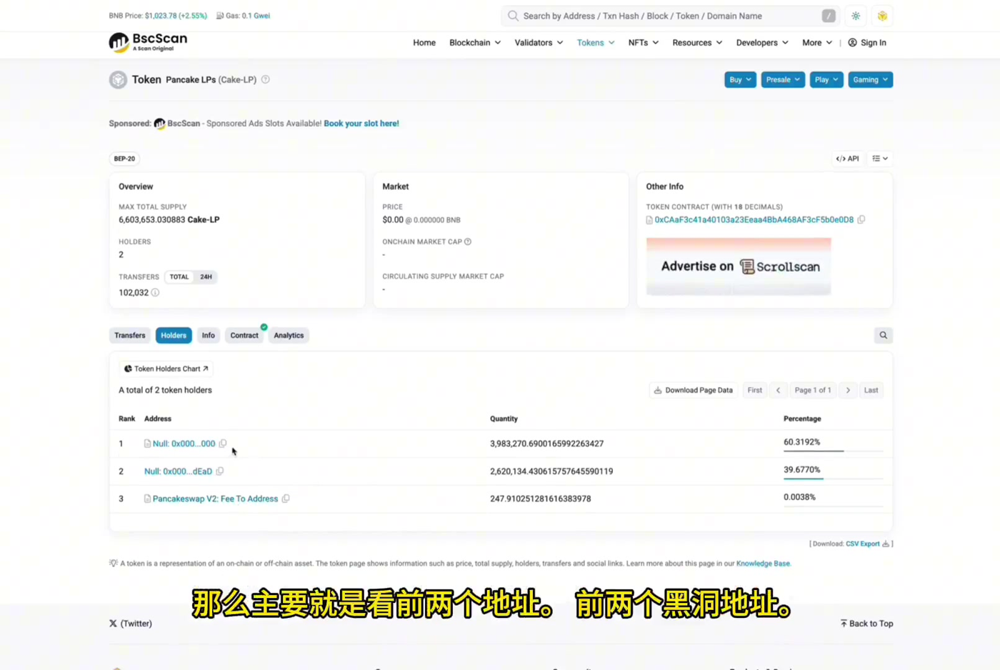
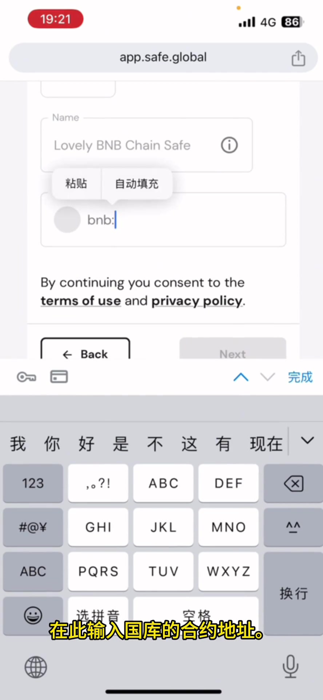
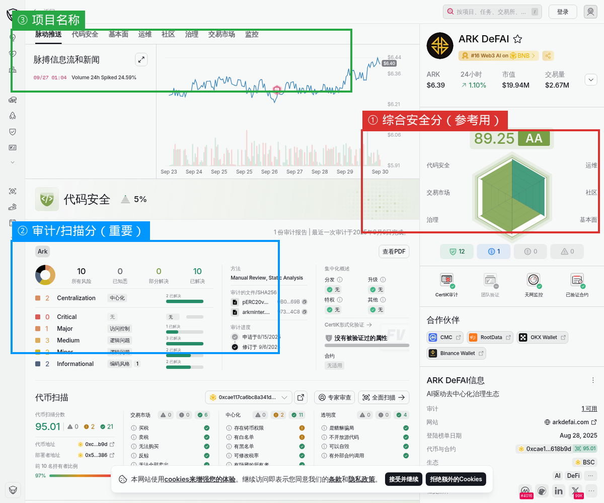
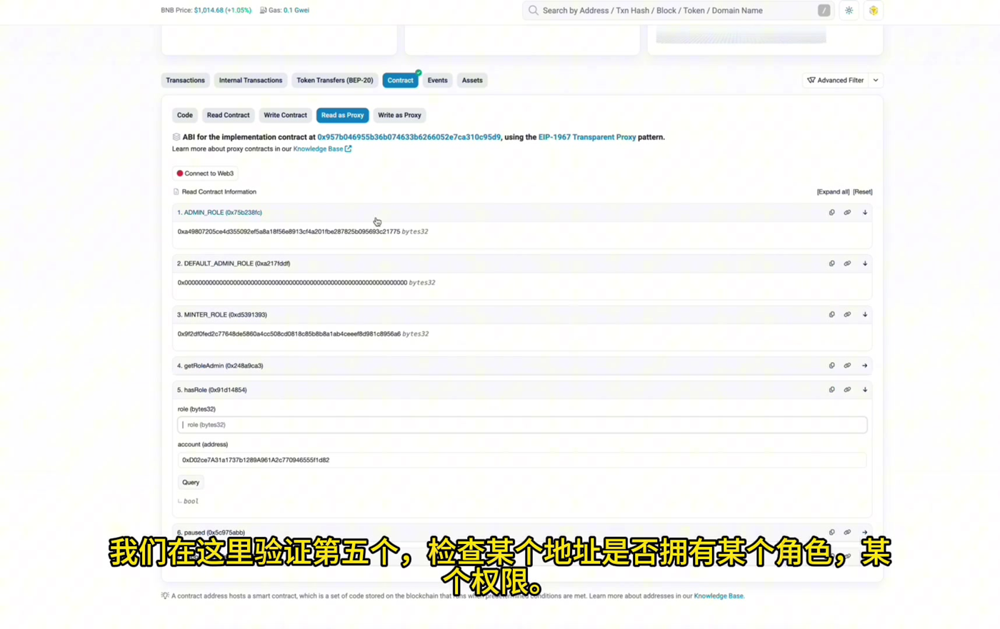

链上查询教程
每一个步骤都给了可以直接点开的链接。不用记网址，点了就去。
每一个查询步骤，网站都给了可以直接点开的链接。不用记网址，点了就去。
建议先收藏这一页，现场演示的时候直接打开。
| 灵魂五问 | 用什么工具查 | 看到什么算过关 |
|---|---|---|
| ① LP 是否上锁？ | AVE.AI → 搜 ARK → 点 LP | 黑洞锁，比例接近 99.99% |
| ② 铸币合约是否开源？ | BscScan → Read Contract | 开源（绿标）；第 7 项治理权限 = 0x000…000 |
| ③ 国库是否多签透明？ | Tally（治理平台） | 有提案记录、投票地址可逐个查 |
| ④ 有 EM 智能发币模组？ | BscScan → 铸币合约 → Read as Proxy | 有 EM 模组，且无人类地址持管理员权限 |
| ⑤ 有 RBS 稳定市值模组？ | 同上（铸币合约交互地址） | 有 RBS 模组 |
实测补充：铸币合约共 16 笔交易、涉及 4 个地址 —— 4 个地址的管理员/超管/铸币权限全部为 False，仅 EM 与 RBS 具备铸币能力。
「在区块链、特别是去中心化的项目当中，一切数据都不需要听别人的嘴巴怎么讲，只需要关注链上的代码怎么写。因为只有代码是骗不了人的。」——卢克劳老师，9/25 午课
实操演示：AVE 查 LP → BscScan 交叉验证 → Tally 查提案 → DeBank 验投票人是否真人。——莲娅老师，9/28 专场2
「审计只是作为参考，链上的数据才是真理。」——AM-022 官方课件
一、先记住这句话
「我教你一句话，你记住就行——
故事可以编造，宣传可以美化，但写在链上的代码，是很难作假的。
代码是中立的，数据是可追溯的。
别人跟你讲得天花乱坠，你就打开链上查一查——真的假的，一目了然。」
「故事可以编造，宣传可以美化，但是写在链上的代码、公开的链上数据是很难作假的。代码是中立的，数据是可追溯的。」——9/28 场2 · 链上查询课
二、第一次：查底池和权限（用 AVE）
「先查最重要的两件事：底池有没有锁、铸币权限有没有丢。
打开 AVE，搜 ARK，一眼就能看到。这两个决定了项目方能不能跑路、能不能偷偷印币。」
打开后看什么：
- 底池状态——有没有上锁
- 点「风险」——看铸币权限是不是「已放弃」

图：查 LP 是否销毁的界面
三、第二次：查国库多签（用 Gnosis Safe）
「再查一个——项目方的钱，由谁管。
如果一个人就能提走，那这个项目就是黑箱。」
打开后看什么：
- 顶部显示 「5/9」 → 意思是 9 个人管，要 5 个人签字才能动钱
- 下面的资产列表 → 国库里有多少钱，一目了然
「你看这个 5/9——就是说，没有任何一个人能单独把钱拿走。」

图：在 Gnosis Safe 里输入国库地址
四、第三次：查治理提案（用 Tally）
「再查一个——项目有没有按规矩办事。
它所有的重要调整都要提案、投票，而且全部公开可查。」
打开后看什么：能看到每一轮提案的内容和投票结果。到现在已经有多轮提案了。
五、查安全审计（用 CertiK）——中文怎么看
「最后查一个——代码有没有被专业机构审计过。
CertiK 是全球顶级的区块链安全机构。但它是英文页面，很多人看不懂，就被人忽悠了。
我教你看几个地方就行。」

CertiK 中文页面 · 我已标注关键位置
① 综合安全分（右上角）
「右上角这个分数是综合评分——它只是参考，不是最重要的。
很多项目就拿这个说『你看我审计通过了』——但那不够。」
② 代币扫描分（左下）— 真正的安全指标
「这个才是最重要的——代币扫描分。
官方教程里说，95% 以上的项目在这里是不合格的。
ARK 这个分数是天花板级别。」
「这是代币综合分数，但仅作为参考之一。其实更重要的是代币的扫描分数，因为那是代币的安全指标。」
「很多项目就是利用这种认知差，反正用户看不懂英文，不知道怎么详细看，有了审计报告就忽悠说安全了。」
「按教程方式去查看，95% 以上的项目都是不合格的。」——官方《如何查询 ARK 的 CK 审计报告》
「但我要提醒你——审计只是参考，链上的数据才是真理。
为什么？因为行业内确实发现过几起案例：项目有问题，但审计没扫描出来。
所以查审计是必要的，但查完之后，还要回到链上看——底池、权限、国库，这些才是硬证据。」
「虽然 CK 审计是行业内的权威，但也有它的局限性。我们确实发现有几个项目存在问题，可是 CK 审计却没有扫描出问题。因此审计只是作为参考，链上的数据才是真理。」——官方《CK 审计讲解》
综合分数是会变动的（不同时间查到 87.97、89.21 都有可能）。你不要记具体数字，要记「看哪个指标」——代币扫描分才是安全指标。
③ 三个勾选标记
「你会看到几个勾——每个意义不一样：
第一个：通过 CK 审计。
第二个：官方把代码挂在 CK 这里，悬赏白帽找漏洞，最高奖励 10 万美金。敢这么做，说明对代码有信心。
第三个：审计的代码和实际部署的代码一致。
尤其第三个——如果没打勾，说明审计用的代码和实际跑的不一样，那是巨大风险。」
④ 代码安全 22 项（看三项关键的）
「往下拉，能看到 22 项安全检查，全部通过。其中三项最关键：
第一个，能不能改税率。打勾 = 项目方没权限改手续费。
第二个，能不能增发。要确认铸币合约开源、增发机制写死了。没有开源代码，就算 LP 锁了也没意义。
第三个，有没有隐藏的所有者。这项最危险——如果没通过，说明项目方保留了管理员权限，还能改规则、无限增发。ARK 这项是通过的。」
「有隐藏的所有者：这个就是管理员权限的意思。说明项目方保留了管理员权限，还有权利更改代币的所有规则，包括无限增发、更改手续费等。这是巨大的安全隐患。」
六、第五次：查合约开源（用 BscScan）
打开后看什么：
- 点 「Contract」标签 → 看到源码 = 已开源
- 搜
owner→ 如果显示零地址 = 权限已丢弃
七、完整流程（一页走完）
| # | 查什么 | 用什么 | 看什么 |
|---|---|---|---|
| 1 | 底池 + 权限 | AVE | 上锁？权限丢没丢？ |
| 2 | 国库多签 | Gnosis Safe | 5/9 签名门槛 |
| 3 | 治理提案 | Tally | 提案与投票记录 |
| 4 | 安全审计 | CertiK | 审计分数 |
| 5 | 合约开源 | BscScan | 源码 + owner |
八、进阶：怎么查「铸币权限」的完整记录
给想「查得更深」的人。前面第五步教你查 owner 是不是零地址——这里教你看完整的权限变更记录。
「你要查得更彻底，就打开铸币合约的调用记录。
为什么？因为一个地址调用过铸币合约，说明它曾经有过管理员权限。
你要做的，是把每一条调用记录都打开看一遍，找出所有出现过的地址。
然后把每个地址都去查一遍——看它们现在还有没有权限。
如果所有地址都没权限了，那才叫『权限真的丢了』。」
「第一步我们要查看铸币合约的调用记录。这些调用记录是哪些地址调用的？如果说有地址调用铸币合约，那么说明这个地址曾经拥有管理员权限。」
「我们每一个区块哈希都要点进去看一下，是否有新的地址被添加为管理员。我们需要点击进入每一个哈希，来检查它的调用情况。」——官方《如何查询铸币合约是否开源和是否放弃权限》

图：在 BscScan 的 Contract 页面查 hasRole（权限查询）
九、进阶：怎么验证「铸币逻辑」
「还有个更硬核的验证方法——看什么行为会触发铸币。
官方的验证结论是：
单纯质押，不会触发铸币。你把币转进质押合约，它就是转了个地方存着，没有新币产生。
只有买债券，才会触发铸币。而且流程是——债券售出 → 资产注入 LP → 黑洞锁定 → 才允许铸币。
这就印证了那句：先有资产，才允许发币。」
「今天我们来验证 ARK 的铸币逻辑，主要从两个方面来验证：第一，单币质押会不会触发铸币；第二，买债券是否会触发铸币。」
「单币质押不会产生铸币行为……奖金池里面的都是买债券触发铸币而转进来的。」——官方《链上验证 ARK 的铸币逻辑》
十、现场演示怎么说（1 分钟版）
「你不用信我说的，我打开给你看。
第一个——底池。（打开 AVE）你看，锁住了。
第二个——权限。你看，铸币权限已经放弃了，他印不了币。
第三个——国库。（打开 Safe）你看这个 5/9，9 个人管，要 5 个人签字才能动钱。
第四个——审计。（打开 CertiK）你看，全球顶级机构审过了。
这四条，都不是我说的，是链上公开的。你也可以自己查。」
边说边点手机，一句一个动作。不要一口气点完——点一个，停一下，让他看清楚。
最后那句「你也可以自己查」，是最有力的收尾。